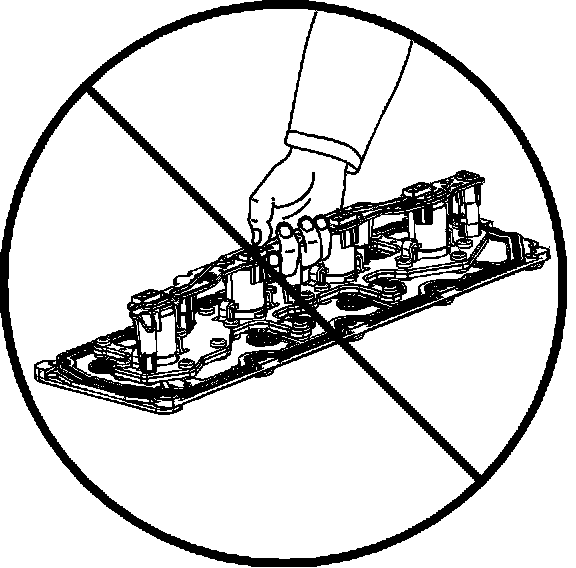

Cylinder Deactivation (Active Fuel Management) Valve Lifter Oil Manifold Diagnosis and Testing
Cylinder Deactivation (Active Fuel Management) Valve Lifter Oil Manifold Diagnosis and Testing
Tools Required
^ EN-46999 Active Fuel Management Tester
^ EN-46999-1 Active Fuel Management Tester Air Adapter
^ EN-46999-5 Active Fuel Management Tester Harness - Small Block V8
Important:
^ Active Fuel Management Valve Lifter Oil Manifold Diagnosis and Testing is applicable for RPO LC9/LY5/LMG/L76/L92.
^ Active fuel management hardware is present in first design L92 engines. The system is inactive for the 2007 model year.
^ A minimum shop air source of 206 kPa (30 psi) is required for manifold testing.
^ A water bleed is located on the side of the EN-46999. Occasionally, depress the valve in order to remove excess water from the tool.
The manifold bench test provides a maximum 206 kPa (30 psi) of filtered shop air to the manifold and will test each solenoid/valve for the following conditions:
^ Proper operation
^ A stuck open condition - constant air flow
^ A stuck closed condition - no air flow
^ A flow restriction within the manifold
1. Individually depress each of the buttons 1-4 on the EN-46999 in order to activate each of the solenoid/valves. When activating each solenoid/valve, a loud click should be heard from the solenoid and an increased amount of air will exit the outlet ports.
^ Button 1 will energize the solenoid/valve 1 for engine cylinder number 1.
^ Button 2 will energize the solenoid/valve 2 for engine cylinder number 4.
^ Button 3 will energize the solenoid/valve 3 for engine cylinder number 6.
^ Button 4 will energize the solenoid/valve 4 for engine cylinder number 7.

2. Do not lift the manifold assembly by the electrical lead frame.
3. Install the EN-46999-1 (1) to the manifold.
Notice: Refer to Fastener Notice.
4. Install 2 of the manifold bolts (2) to the EN-46999-1.
Tighten the bolts to 25 N.m (18 lb ft).
5. Connect the air out hose (2) of the EN-46999 (5) to the EN-46999-1 (1). Verify the air supply switch (4) is in the off position.
6. Connect the air in hose (6) of the EN-46999 (5) to a shop air source.
7. Connect the 12 volt power supply connectors (7) of the EN-46999 (5) to a 12 volt power supply. Verify the Power light (8) on the tool is illuminated. If the light on the tool is not illuminated when connected to a 12 volt power supply, test and/or replace the 3 amp fuse.
8. Connect the EN-46999-5 power cable (3) to the electrical connector of the manifold.
9. Turn the air supply switch of the EN-46999 to the ON position. With the air supply connected to the manifold assembly and the solenoid/valves in the closed position, a limited amount of air will exit each of the bleed holes (3) and outlet ports (1, 2) of the manifold.
Important: The manifold must be tested in the proper position to ensure the solenoid/valves operate as designed.
10. Position the manifold assembly onto a bench at a 45 degree angle in order to test solenoid/valves 1 and 4.
11. Depress button number 1 on the tool to activate solenoid/valve 1. With button 1 depressed, the solenoid/valve (1) should open, allowing an increased amount of air to exit the outlet ports (2) of the manifold.
12. Depress button number 4 on the tool to activate solenoid/valve 4. With button 4 depressed, the solenoid/valve (4) should open, allowing an increased amount of air to exit the outlet ports (3) of the manifold.
13. Reposition the manifold assembly onto a bench at a 45 degree angle in order to test solenoid/valves 2 and 3.
14. Depress button number 2 on the tool to activate solenoid/valve 2. With button 2 depressed, the solenoid/valve (2) should open, allowing an increased amount of air to exit the outlet ports (4) of the manifold.
15. Depress button number 3 on the tool to activate solenoid/valve 3. With button 3 depressed, the solenoid/valve (3) should open, allowing an increased amount of air to exit the outlet ports (1) of the manifold.
16. When the test is completed, turn the air source switch on the EN-46999 to the off position and disconnect the tool from the 12 volt power supply, shop air source and manifold assembly.
17. If after testing, it has been determined that one or more of the solenoid/valves is not functioning properly, replace the manifold as an assembly.
18. If after testing, it has been determined that the solenoid/valves are functioning properly, replace the valve lifters as required. Both intake and exhaust lifters should be replaced in pairs.